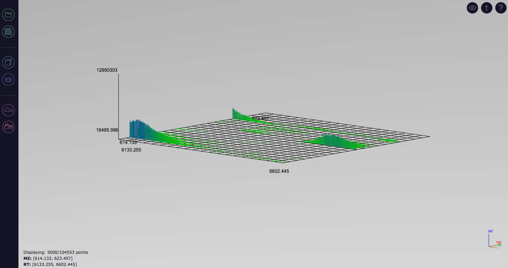
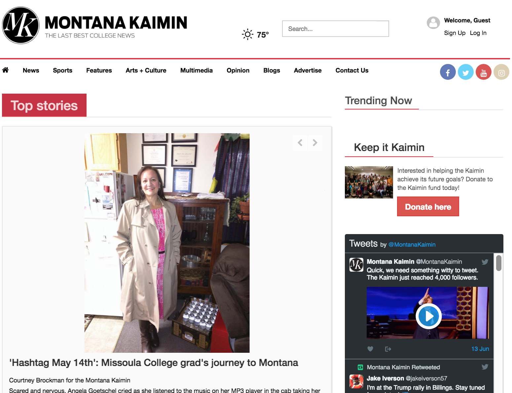
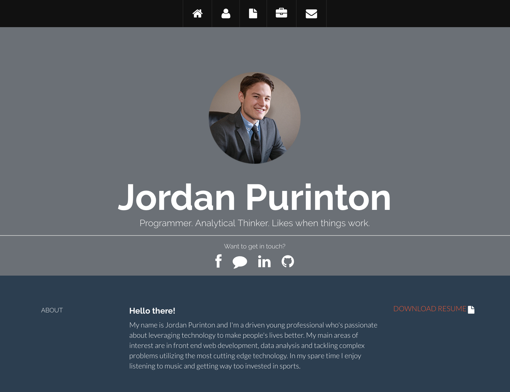

University of Montana
Senior
AUGUST 2015 - FEBRUARY 2016
MAY 2014 - SEPTEMBER 2015
MAY 2015 - AUGUST 2015
University of Montana
University of Montana
University of Montana
University of Montana
Front End Programming Skills
Scripting Language Skills
Object Oriented Experience
Communication
Software
Diverse Technical Skills

Data Visualization Program UI

Montana Kaimin Website Redesign

This website!